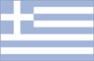
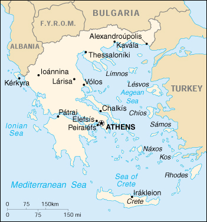

{kind=link}


| Greece |  |
|
|  | |
| Introduction |
Background: Greece achieved its independence from the Ottoman Empire in 1829. During the second half of the 19th century and the first half of the 20th century, it gradually added neighboring islands and territories with Greek-speaking populations. Following the defeat of communist rebels in 1949, Greece joined NATO in 1952. A military dictatorship, which in 1967 had suspended many political liberties and forced the king to flee the country, was itself overthrown seven years later. Democratic elections in 1974 abolished the monarchy and created a parliamentary republic; Greece joined the EU in 1981.
| Geography |
Location: Southern Europe, bordering the Aegean Sea, Ionian Sea, and the Mediterranean Sea, between Albania and Turkey
Geographic coordinates: 39 00 N, 22 00 E
Map references: Europe
Area:
total:
131,940 sq km
land:
130,800 sq km
water:
1,140 sq km
Area - comparative: slightly smaller than Alabama
Land boundaries:
total:
1,210 km
border countries:
Albania 282 km, Bulgaria 494 km, Turkey 206 km, The Former Yugoslav Republic of Macedonia 228 km
Coastline: 13,676 km
Maritime claims:
continental shelf:
200-m depth or to the depth of exploitation
territorial sea:
6 nm
Climate: temperate; mild, wet winters; hot, dry summers
Terrain: mostly mountains with ranges extending into the sea as peninsulas or chains of islands
Elevation extremes:
lowest point:
Mediterranean Sea 0 m
highest point:
Mount Olympus 2,917 m
Natural resources: bauxite, lignite, magnesite, petroleum, marble, hydropower
Land use:
arable land:
19%
permanent crops:
8%
permanent pastures:
41%
forests and woodland:
20%
other:
12% (1993 est.)
Irrigated land: 13,140 sq km (1993 est.)
Natural hazards: severe earthquakes
Environment - current issues: air pollution; water pollution
Environment - international agreements:
party to:
Air Pollution, Air Pollution-Nitrogen Oxides, Air Pollution-Sulphur 94, Antarctic-Environmental Protocol, Antarctic Treaty, Biodiversity, Climate Change, Desertification, Endangered Species, Environmental Modification, Hazardous Wastes, Law of the Sea, Marine Dumping, Nuclear Test Ban, Ozone Layer Protection, Ship Pollution, Tropical Timber 83, Tropical Timber 94, Wetlands
signed, but not ratified:
Air Pollution-Persistent Organic Pollutants, Air Pollution-Volatile Organic Compounds, Climate Change-Kyoto Protocol
Geography - note: strategic location dominating the Aegean Sea and southern approach to Turkish Straits; a peninsular country, possessing an archipelago of about 2,000 islands
| People |
Population: 10,601,527 (July 2000 est.)
Age structure:
0-14 years:
15% (male 828,585; female 779,902)
15-64 years:
67% (male 3,580,079; female 3,574,788)
65 years and over:
18% (male 815,247; female 1,022,926) (2000 est.)
Population growth rate: 0.21% (2000 est.)
Birth rate: 9.82 births/1,000 population (2000 est.)
Death rate: 9.64 deaths/1,000 population (2000 est.)
Net migration rate: 1.97 migrant(s)/1,000 population (2000 est.)
Sex ratio:
at birth:
1.07 male(s)/female
under 15 years:
1.06 male(s)/female
15-64 years:
1 male(s)/female
65 years and over:
0.8 male(s)/female
total population:
0.97 male(s)/female (2000 est.)
Infant mortality rate: 6.51 deaths/1,000 live births (2000 est.)
Life expectancy at birth:
total population:
78.44 years
male:
75.89 years
female:
81.16 years (2000 est.)
Total fertility rate: 1.33 children born/woman (2000 est.)
Nationality:
noun:
Greek(s)
adjective:
Greek
Ethnic groups:
Greek 98%, other 2%
note:
the Greek Government states there are no ethnic divisions in Greece
Religions: Greek Orthodox 98%, Muslim 1.3%, other 0.7%
Languages: Greek 99% (official), English, French
Literacy:
definition:
age 15 and over can read and write
total population:
95%
male:
98%
female:
93% (1991 est.)
| Government |
Country name:
conventional long form:
Hellenic Republic
conventional short form:
Greece
local long form:
Elliniki Dhimokratia
local short form:
Ellas or Ellada
former:
Kingdom of Greece
Data code: GR
Government type: parliamentary republic; monarchy rejected by referendum 8 December 1974
Capital: Athens
Administrative divisions: 51 prefectures (nomoi, singular - nomos)and 1 autonomous region*; Ayion Oros* (Mt. Athos), Aitolia kai Akarnania, Akhaia, Argolis, Arkadhia, Arta, Attiki, Dhodhekanisos, Drama, Evritania, Evros, Evvoia, Florina, Fokis, Fthiotis, Grevena, Ilia, Imathia, Ioannina, Irakleion, Kardhitsa, Kastoria, Kavala, Kefallinia, Kerkyra, Khalkidhiki, Khania, Khios, Kikladhes, Kilkis, Korinthia, Kozani, Lakonia, Larisa, Lasithi, Lesvos, Levkas, Magnisia, Messinia, Pella, Pieria, Preveza, Rethimni, Rodhopi, Samos, Serrai, Thesprotia, Thessaloniki, Trikala, Voiotia, Xanthi, Zakinthos
Independence: 1829 (from the Ottoman Empire)
National holiday: Independence Day, 25 March (1821) (proclamation of the war of independence)
Constitution: 11 June 1975; amended March 1986
Legal system: based on codified Roman law; judiciary divided into civil, criminal, and administrative courts
Suffrage: 18 years of age; universal and compulsory
Executive branch:
chief of state:
President Konstandinos (Kostis) STEPHANOPOULOS (since 10 March 1995)
head of government:
Prime Minister Konstandinos SIMITIS (since 19 January 1996)
cabinet:
Cabinet appointed by the president on the recommendation of the prime minister
elections:
president elected by Parliament for a five-year term; election last held 8 February 2000 (next to be held by NA March 2005); prime minister appointed by the president
election results:
Konstandinos STEPHANOPOULOS reelected president; percent of Parliament vote - 90%
Legislative branch:
unicameral Parliament or Vouli ton Ellinon (300 seats; members are elected by direct popular vote to serve four-year terms)
elections:
elections last held 9 April 2000 (next to be held by NA April 2004)
election results:
percent of vote by party - PASOK 43.8%, ND 42.7%, KKE 5.5%, Coalition of the Left and Progress 3.2%; seats by party - PASOK 158, ND 125, KKE 11, Coalition of the Left and Progress 6
Judicial branch: Supreme Judicial Court, judges appointed for life by the president after consultation with a judicial council; Special Supreme Tribunal, judges appointed for life by the president after consultation with a judicial council
Political parties and leaders: Coalition of the Left and Progress (Synaspismos) [Nikolaos KONSTANDOPOULOS]; Communist Party of Greece or KKE [Aleka PAPARIGA]; Democratic Social Movement or DIKKI [Dhimitrios TSOVOLAS]; Liberal Party [Stephanos MANOS]; New Democracy or ND (conservative) [Konstandinos KARAMANLIS]; Panhellenic Socialist Movement or PASOK [Konstandinos SIMITIS]; Political Spring [Andonis SAMARAS]; Rainbow Coalition [Pavlos VOSKOPOULOS]
International organization participation: Australia Group, BIS, BSEC, CCC, CE, CERN, EAPC, EBRD, ECE, EIB, EU, FAO, G- 6, IAEA, IBRD, ICAO, ICC, ICFTU, ICRM, IDA, IEA, IFAD, IFC, IFRCS, IHO, ILO, IMF, IMO, Inmarsat, Intelsat, Interpol, IOC, IOM, ISO, ITU, MINURSO, NAM (guest), NATO, NEA, NSG, OAS (observer), OECD, OPCW, OSCE, PCA, UN, UNCTAD, UNESCO, UNHCR, UNIDO, UNIKOM, UNMIBH, UNOMIG, UPU, WEU, WFTU, WHO, WIPO, WMO, WToO, WTrO, ZC
Diplomatic representation in the US:
chief of mission:
Ambassador Alexandros PHILON
chancery:
2221 Massachusetts Avenue NW, Washington, DC 20008
telephone:
[1] (202) 939-5800
FAX:
[1] (202) 939-5824
consulate(s) general:
Boston, Chicago, Los Angeles, New York, and San Francisco
consulate(s):
Atlanta, Houston, and New Orleans
Diplomatic representation from the US:
chief of mission:
Ambassador R. Nicholas BURNS
embassy:
91 Vasilissis Sophias Boulevard, 10160 Athens
mailing address:
PSC 108, APO AE 09842-0108
telephone:
[30] (1) 721-2951
FAX:
[30] (1) 645-6282
consulate(s) general:
Thessaloniki
Flag description: nine equal horizontal stripes of blue alternating with white; there is a blue square in the upper hoist-side corner bearing a white cross; the cross symbolizes Greek Orthodoxy, the established religion of the country
| Economy |
Economy - overview: Greece has a mixed capitalist economy with the public sector accounting for about half of GDP. The government plans to privatize some leading state enterprises. Tourism is a key industry, providing a large portion of GDP and foreign exchange earnings. Greece is a major beneficiary of EU aid, equal to about 4% of GDP. The economy has improved steadily over the last few years, as the government has tightened policy with the goal of qualifying Greece to join the EU's single currency (the euro) in 2001. In particular, Greece has cut its budget deficit below 2% of GDP and tightened monetary policy, with the result that inflation fell below 4% by the end of 1998 - the lowest rate in 26 years - and averaged only 2.6% in 1999. Further restructuring of the economy and the reduction of unemployment remain major challenges.
GDP: purchasing power parity - $149.2 billion (1999 est.)
GDP - real growth rate: 3% (1999 est.)
GDP - per capita: purchasing power parity - $13,900 (1999 est.)
GDP - composition by sector:
agriculture:
8.3%
industry:
27.3%
services:
64.4% (1998)
Population below poverty line: NA%
Household income or consumption by percentage share:
lowest 10%:
NA%
highest 10%:
NA%
Inflation rate (consumer prices): 2.6% (1999 est.)
Labor force: 4.32 million (1999 est.)
Labor force - by occupation: services 59.2%, agriculture 19.8%, industry 21% (1998)
Unemployment rate: 9.9% (1999 est.)
Budget:
revenues:
$45 billion
expenditures:
$47.6 billion, including capital expenditures of $NA (1998 est.)
Industries: tourism; food and tobacco processing, textiles; chemicals, metal products; mining, petroleum
Industrial production growth rate: 1% (1999 est.)
Electricity - production: 43.677 billion kWh (1998)
Electricity - production by source:
fossil fuel:
8.26%
hydro:
91.24%
nuclear:
0%
other:
0.5% (1998)
Electricity - consumption: 42.18 billion kWh (1998)
Electricity - exports: 900 million kWh (1998)
Electricity - imports: 2.46 billion kWh (1998)
Agriculture - products: wheat, corn, barley, sugar beets, olives, tomatoes, wine, tobacco, potatoes; beef, dairy products
Exports: $12.4 billion (f.o.b., 1998)
Exports - commodities: manufactured goods, food and beverages, fuels (1998)
Exports - partners: EU 56% (Germany 25%, Italy 11%, UK 8%, France 6%), US 16% (1997)
Imports: $27.7 billion (c.i.f., 1998)
Imports - commodities: manufactured goods, foodstuffs, fuels, chemicals (1998)
Imports - partners: EU 61% (Italy 16%, Germany 16%, France 8%, UK 7%, Netherlands 5%) US 11% (1997)
Debt - external: $41.9 billion (1998)
Economic aid - recipient: $5.4 billion from EU (1997 est.)
Currency: 1 drachma (Dr) = 100 lepta
Exchange rates: drachmae (Dr) per US$1 - 326.59 (January 2000), 305.65 (1999), 295.53 (1998), 273.06 (1997), 240.71 (1996), 231.66 (1995)
Fiscal year: calendar year
| Communications |
Telephones - main lines in use: 5.431 million (1997)
Telephones - mobile cellular: 328,500 (1997)
Telephone system:
adequate, modern networks reach all areas; microwave radio relay carries most traffic; extensive open-wire network; submarine cables to off-shore islands
domestic:
microwave radio relay, open wire, and submarine cable
international:
tropospheric scatter; 8 submarine cables; satellite earth stations - 2 Intelsat (1 Atlantic Ocean and 1 Indian Ocean), 1 Eutelsat, and 1 Inmarsat (Indian Ocean region)
Radio broadcast stations: AM 26, FM 88, shortwave 4 (1998)
Radios: 5.02 million (1997)
Television broadcast stations: 64 (plus about 1,000 low-power repeaters); also two stations in the US Armed Forces Network (1999)
Televisions: 2.54 million (1997)
Internet Service Providers (ISPs): 23 (1999)
| Transportation |
Railways:
total:
2,548 km
standard gauge:
1,565 km 1.435-m gauge (36 km electrified; 23 km double track)
narrow gauge:
961 km 1.000-m gauge; 22 km 0.750-m gauge (a rack type railway for steep grades)
Highways:
total:
117,000 km
paved:
107,406 km (including 470 km of expressways)
unpaved:
9,594 km (1996 est.)
Waterways: 80 km; system consists of three coastal canals; including the Corinth Canal (6 km) which crosses the Isthmus of Corinth connecting the Gulf of Corinth with the Saronic Gulf and shortens the sea voyage from the Adriatic to Peiraiefs (Piraeus) by 325 km; and three unconnected rivers
Pipelines: crude oil 26 km; petroleum products 547 km
Ports and harbors: Alexandroupolis, Elefsis, Irakleion (Crete), Kavala, Kerkyra, Chalkis, Igoumenitsa, Lavrion, Patrai, Peiraiefs (Piraeus), Thessaloniki, Volos
Merchant marine:
total:
779 ships (1,000 GRT or over) totaling 24,744,872 GRT/43,734,138 DWT
ships by type:
bulk 273, cargo 60, chemical tanker 22, combination bulk 5, combination ore/oil 8, container 43, liquified gas 5, multi-functional large load carrier 1, passenger 12, passenger/cargo 2, petroleum tanker 245, refrigerated cargo 3, roll-on/roll-off 19, short-sea passenger 75, specialized tanker 4, vehicle carrier 2 (1999 est.)
Airports: 80 (1999 est.)
Airports - with paved runways:
total:
64
over 3,047 m:
6
2,438 to 3,047 m:
15
1,524 to 2,437 m:
18
914 to 1,523 m:
17
under 914 m:
8 (1999 est.)
Airports - with unpaved runways:
total:
16
over 3,047 m:
1
1,524 to 2,437 m:
1
914 to 1,523 m:
2
under 914 m:
12 (1999 est.)
Heliports: 2 (1999 est.)
| Military |
Military branches: Hellenic Army, Hellenic Navy, Hellenic Air Force, National Guard, Police
Military manpower - military age: 21 years of age
Military manpower - availability:
males age 15-49:
2,674,571 (2000 est.)
Military manpower - fit for military service:
males age 15-49:
2,043,414 (2000 est.)
Military manpower - reaching military age annually:
males:
78,448 (2000 est.)
Military expenditures - dollar figure: $4.04 billion (FY98 est.)
Military expenditures - percent of GDP: NA%
| Transnational Issues |
Disputes - international: complex maritime, air, and territorial disputes with Turkey in Aegean Sea; Cyprus question with Turkey; dispute with The Former Yugoslav Republic of Macedonia over its name
Illicit drugs: a gateway to Europe for traffickers smuggling cannabis and heroin from the Middle East and Southwest Asia to the West and precursor chemicals to the East; some South American cocaine transits or is consumed in Greece